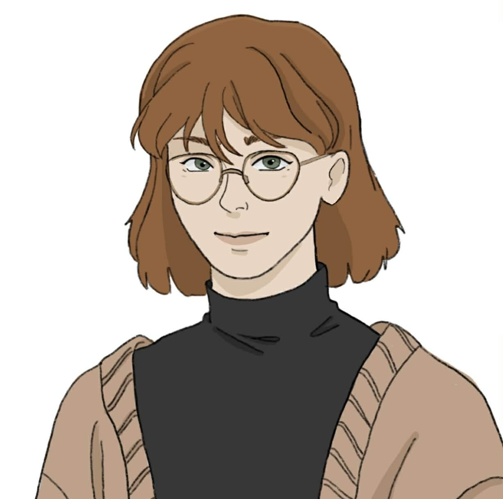

sunflorence
główna autorka
Mój chłopak też jest kibolem
ilustratorka
Pisze historie o emocjach, które zaczynają się niewinnie, a kończą dokładnie tam,
gdzie nikt nie planował dojść.
zainteresowania
- gejoza
- ...
- ...
- ...
Bio
Tu wpisz bio sunflorence. Możesz opisać swój styl pisania, ulubione motywy, klimat twórczości i to, co najbardziej lubisz w budowaniu relacji między postaciami. Najładniej sprawdzają się 3–5 zdań z charakterem.
„wyślij mi do wklejenia tę scenę jak psycholog przeklinała jak jej przerwali pisanie yaoi albo co tam wolisz”